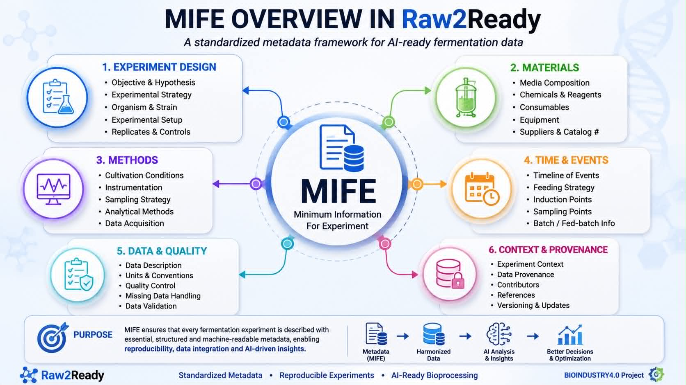
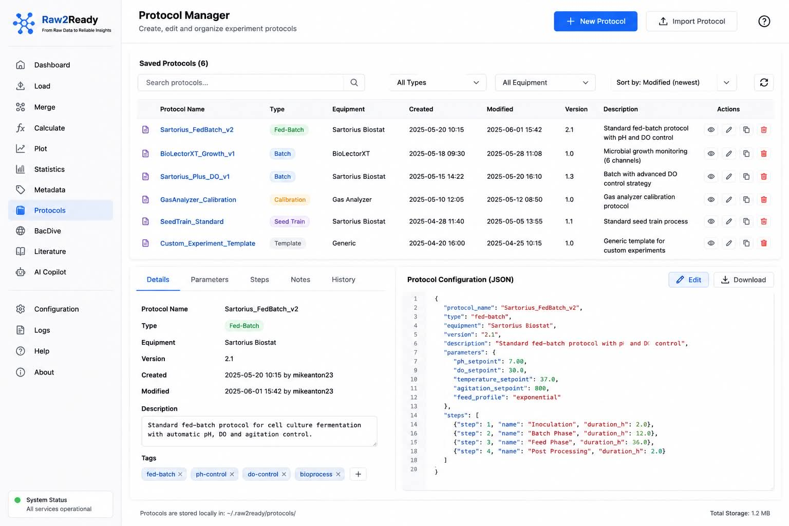
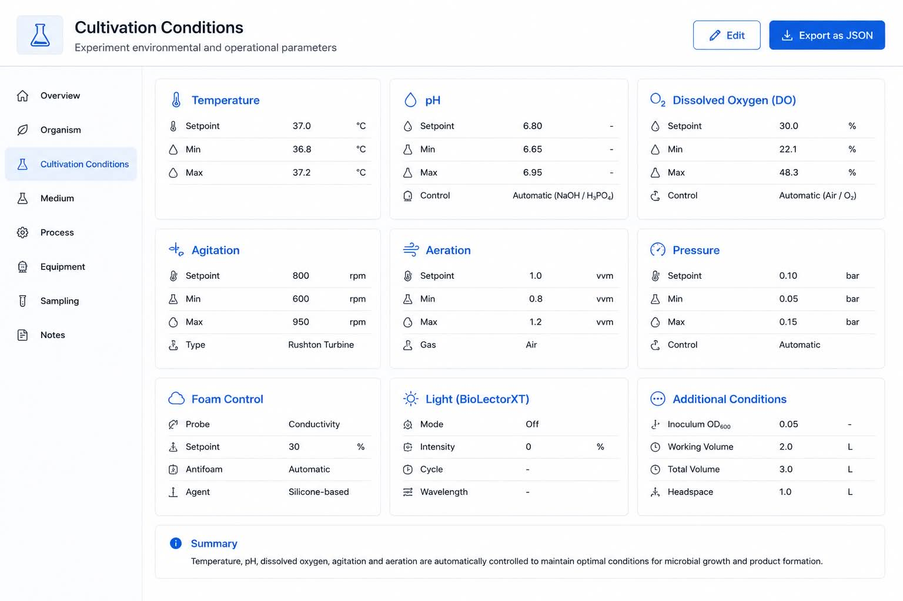
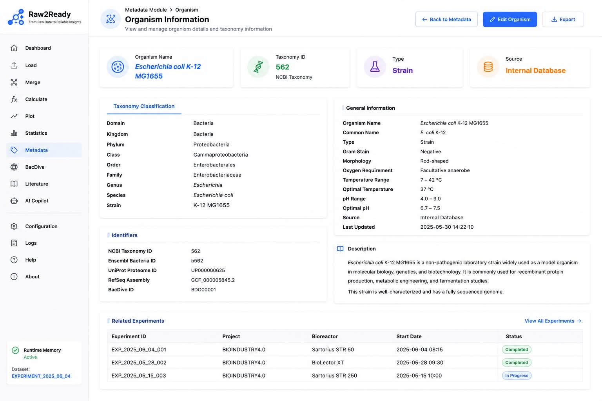
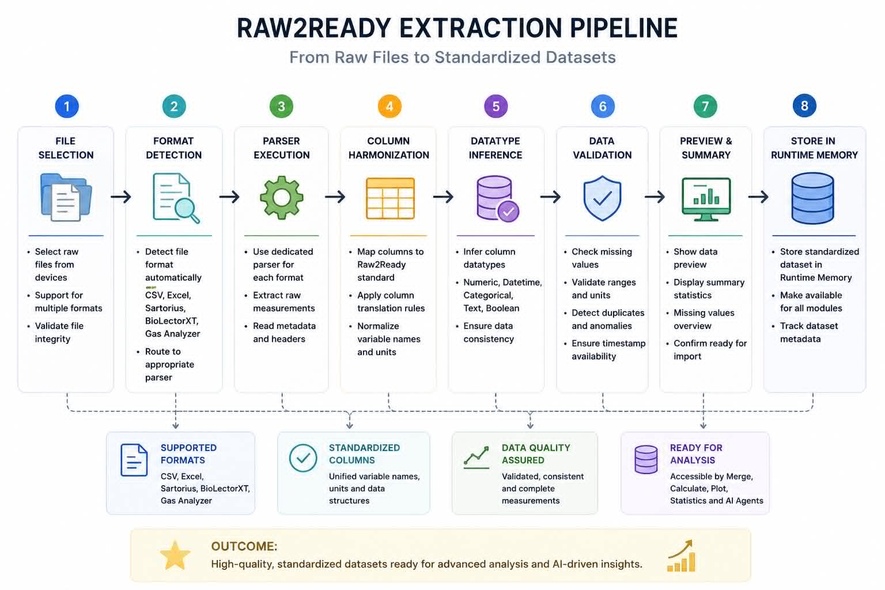
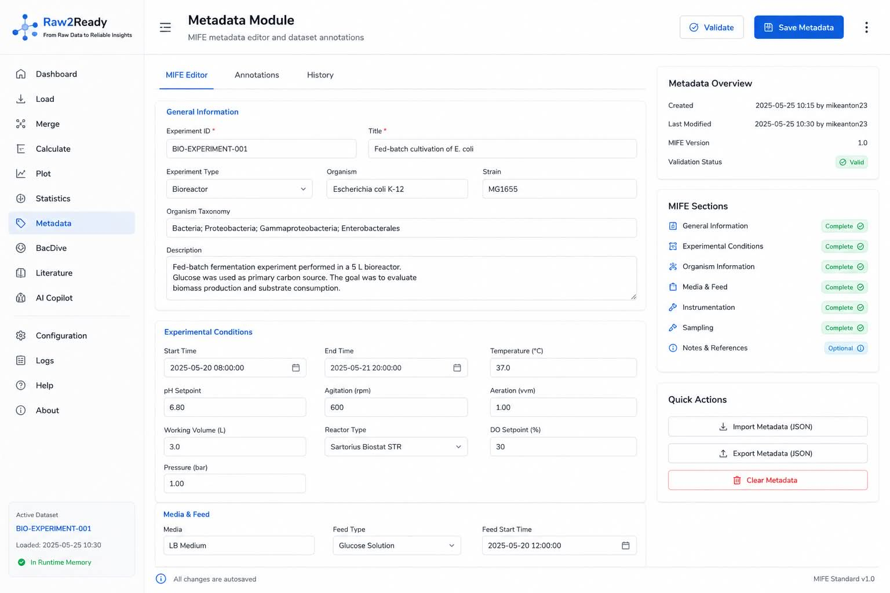
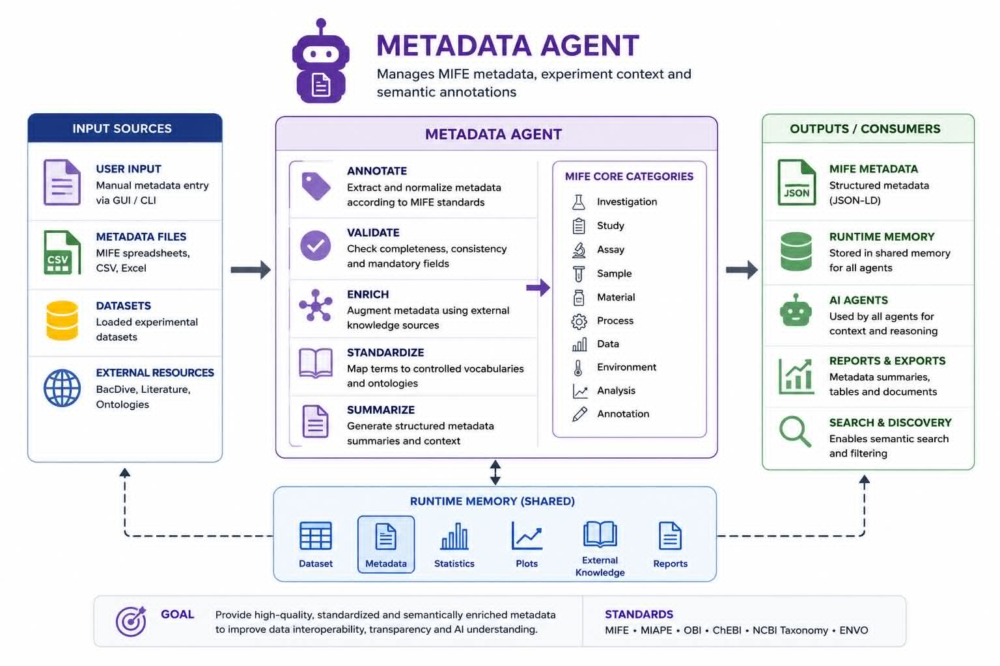
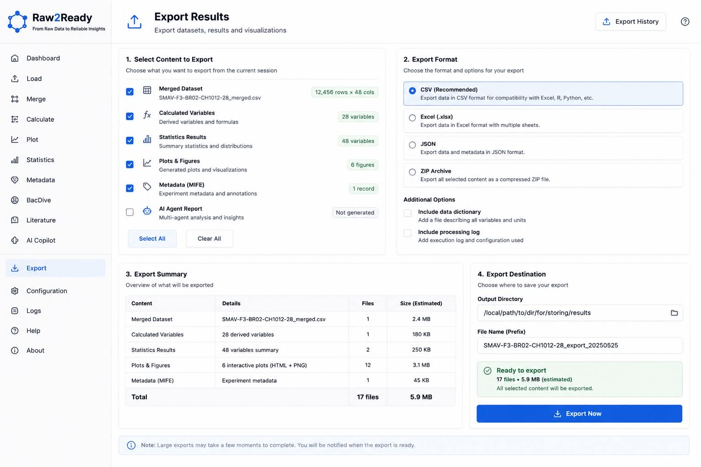

Metadata Module
Semantic annotation of fermentation experiments using the Minimum Information Framework for Fermentation Experiments (MIFE).
Overview
Experimental measurements alone rarely provide sufficient information for interpreting fermentation experiments.
Researchers must also capture cultivation protocols, experimental conditions, organism information, equipment configuration and laboratory procedures.
The Metadata Module enables users to create structured, machine-readable metadata using the Minimum Information Framework for Fermentation Experiments (MIFE), ensuring reproducibility, interoperability and AI-ready experimental documentation.
Objectives
- Capture experimental context.
- Standardize metadata representation.
- Support FAIR data principles.
- Improve reproducibility.
- Provide AI-readable metadata.
- Enable semantic search.
- Support knowledge integration.
Why Metadata Matters
Two fermentation experiments may contain identical sensor measurements while representing completely different biological processes.
Metadata provides the contextual information necessary to correctly interpret experimental observations.
- Microorganism
- Medium composition
- Bioreactor configuration
- Cultivation protocol
- Sampling schedule
- Environmental conditions
- Operator information
Without metadata, experimental measurements lose much of their scientific value.
Minimum Information Framework (MIFE)
Raw2Ready implements the Minimum Information Framework for Fermentation Experiments (MIFE) developed within the BIOINDUSTRY4.0 project.
MIFE defines a standardized schema for describing fermentation experiments using structured metadata.

Metadata Architecture
Protocol
│
▼
Metadata Forms
│
▼
MIFE Structure
│
▼
Validation
│
▼
Metadata Repository
│
▼
AI Agents
Every metadata record follows the same standardized representation.
Metadata Workflow
Create Experiment
│
▼
Fill Metadata
│
▼
Validate Fields
│
▼
Save Metadata
│
▼
Runtime Memory
│
▼
AI Reasoning
Metadata accompanies experimental datasets throughout the entire Raw2Ready workflow.
Metadata Categories
The Metadata Module organizes experimental information into standardized categories defined by the MIFE specification.
| Category | Description |
|---|---|
| Experiment | General experiment information. |
| Microorganism | Species, strain and taxonomy. |
| Bioreactor | Equipment configuration. |
| Medium | Culture media composition. |
| Cultivation | Operating conditions. |
| Sampling | Sampling schedule and analysis. |
| Protocol | Experimental procedures. |
Protocol Management
Raw2Ready enables users to create, edit and manage experimental protocols using structured metadata forms.
Instead of storing protocols as plain text, metadata fields remain searchable, reusable and interpretable by AI agents.

Experimental Conditions
The Metadata Module records cultivation conditions that influence fermentation performance.
- Temperature
- pH
- Dissolved oxygen
- Agitation speed
- Aeration rate
- Pressure
- Culture duration

Microorganism Information
Metadata describing the cultivated microorganism provides essential biological context for interpreting fermentation experiments.
- Scientific name
- Strain identifier
- Taxonomy
- Culture collection
- Growth characteristics

Time-Dependent Events
Fermentation protocols frequently include events occurring at specific time points during an experiment.
Raw2Ready records these events as structured metadata.
0 h → Inoculation
2 h → pH Adjustment
5 h → Feed Started
12 h → Sampling
18 h → Induction
24 h → Harvest
Automatic Metadata Extraction
Raw2Ready can automatically extract structured metadata from protocol descriptions and laboratory documentation.
The extraction process identifies organisms, cultivation parameters, reagents, time-dependent events and experimental conditions.

Metadata Validation
Before metadata are stored, Raw2Ready performs automatic validation to ensure consistency and completeness.
- Required fields
- Controlled vocabularies
- Date validation
- Scientific name verification
- Duplicate detection
- Missing field identification
Validation improves metadata quality and reproducibility across experiments.
Metadata Editor Interface
The NiceGUI interface provides an interactive metadata editor that simplifies annotation through structured forms and guided data entry.
- Experiment editor
- Protocol editor
- Microorganism selector
- Condition editor
- Validation messages
- Save and update actions

Runtime Memory Integration
Metadata are stored alongside the experimental dataset in Runtime Memory and remain available throughout the Raw2Ready workflow.
Runtime Memory
│
├── Dataset
├── Metadata
├── Calculated Variables
├── Statistical Results
└── AI Context
Storing metadata together with numerical data enables context-aware analysis and reasoning across every Raw2Ready module.
Metadata and AI Integration
Metadata is not only stored for documentation purposes but also serves as contextual knowledge for the Raw2Ready Multi-Agent framework.
During AI-assisted reasoning, metadata is combined with experimental datasets, statistical analyses, BacDive knowledge and scientific literature to generate biologically meaningful responses.
Experimental Dataset
│
├────────────┐
│ │
Metadata Statistics
│ │
└──────┬─────┘
▼
Metadata Analyst
│
▼
Agent Orchestrator
│
▼
Master Summarizer
Metadata provides the contextual information that allows AI agents to correctly interpret numerical observations.
Metadata Analyst Agent
The Metadata Analyst Agent automatically processes structured metadata and transforms experimental descriptions into knowledge suitable for AI reasoning.
- Reads protocol metadata
- Identifies experimental conditions
- Extracts cultivation parameters
- Links metadata with datasets
- Provides contextual evidence

FAIR Data Principles
The Metadata Module follows the FAIR principles to improve the long-term value of fermentation datasets.
| Principle | Implementation |
|---|---|
| Findable | Structured metadata fields |
| Accessible | Human-readable interface |
| Interoperable | Standardized metadata schema |
| Reusable | Complete experimental context |
Exporting Metadata
Metadata records can be exported for sharing, archival and integration with external systems.
- JSON
- YAML
- CSV
- MIFE-compatible format
- AI-ready structured output

Best Practices
- Complete all required metadata fields.
- Use standardized scientific names.
- Record protocol changes immediately.
- Maintain consistent units.
- Validate metadata before saving.
- Update metadata together with datasets.
- Review metadata before AI analysis.
Troubleshooting
| Problem | Possible Cause | Recommended Solution |
|---|---|---|
| Metadata cannot be saved | Required fields missing | Complete all mandatory fields. |
| Validation failed | Invalid values | Review highlighted fields. |
| Protocol not linked | Experiment not selected | Associate metadata with an experiment. |
| AI missing context | Metadata incomplete | Add cultivation and protocol information. |
| Export unavailable | Metadata not validated | Validate before exporting. |
Summary
The Metadata Module enriches fermentation datasets with structured experimental context using the Minimum Information Framework for Fermentation Experiments (MIFE).
By combining structured metadata with experimental measurements, Raw2Ready enables reproducible, interoperable and AI-ready fermentation research.
Metadata transforms experimental measurements into scientifically interpretable knowledge.
Next Step
After datasets and metadata have been prepared, users can continue to the Multi-Agent AI Framework, where specialized AI agents combine experimental data, metadata, microbial knowledge and scientific literature to provide evidence-based reasoning and intelligent decision support.